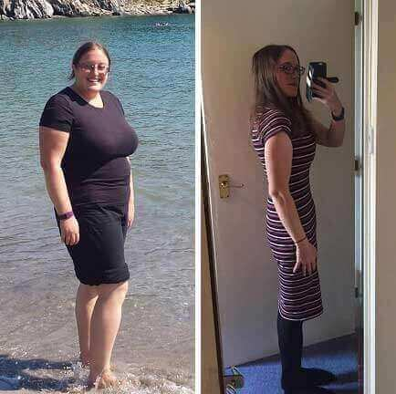

LIFE-CHANGING: The University of Harvard Medical Student Discovers One Secret Mineral That Helps You Lose 52 lbs In 28 Days
Shark Tank Invests 50 Million Dollars To "One Secret Mineral" WightLoss Pills
- HEALTH
- NUTRITIONAL SUPPLEMENTS
- PROGRESSPICS
- DIET
- WEIGHT LOSS


Have you ever thought Why the celebrities could lose weight so quickly and easily?
That’s Emily Senstrom, a top medical student at Harvard University.
Within 28 Days, she was able to melt away 52 lbs! No diet or exercise needed.
Her medical specialty is nutrition. And in her experiments for her senior thesis, she stumbled upon a new fat blocking code no one has heard of before.
To make sure this wasn’t a fluke, even Melissa Mccarthy (actress, comedian) tried it out:

Mike Pompeo lost 90 pounds within 3 months.
After that, Tom Arnold (actor, comedian) privately tried this new fat blocking code too:
Tom Arnold dropped 75 pounds within 2 months.
Melissa McCarthy (actress, comedian), saw outstanding results:
Melissa McCarthy lost over 62 lbs in under 2 months with Emily’s help.
Even Emily’s The University of Harvard professors and their colleagues were stunned.
Despite their skepticism, she defended her thesis on stage and claimed:
“I can get anyone to see similar results. If you’re struggling with your weight... YOU can lose 52 lbs in 28 days. Without dieting or exercise. Thanks to this one secret mineral.”
The crowd was floored. People were going nuts.
The University of Harvard professors were gossiping amongst each other. It all seemed fake to them.
But, Emily wanted to prove them wrong.
She wanted to show people that this one secret mineral does exist. And that it’s the key to blocking any fat gain.
The key to losing 52 lbs in 28 days.
Wouldn’t want to lose that much weight so fast?
Don’t worry. You can see these results very soon.
But before we show you how, let’s talk about how Emily made this possible.
How Emily Made This Discovery
Emily discovered this revolutionary fat loss solution during her 2nd year of medical school at The University of Harvard.
With all the classes and studying, eating healthy and exercising were the last things on her mind.
That’s why she gained over 50 pounds during her first year of med school.
And as a nutritional specialist, she was ashamed. Especially since it was her mission to help other people stay healthy!
But her priority at the moment was to study hard and get those high marks to get an ideal internship after The University of Harvard.
During one late night of studying in the library, Emily was looking for a certain book for her research.
In the process of this search, she stumbled upon this one area of books. She would later find out this was a restricted section.
She picked out this one book that was similar to what she needed.
As she was flipping through the pages, it was the wrong book. However, she came across this one chapter called “The Fat Blocking Code”.
“There’s no way this is possible!” she thought.
Yet, she kept reading and reading.
Then she looked up and noticed it was indeed a restricted section.
But this information was just too good. So she took down lots of notes and snuck off to photocopy all the juicy pages of info.
She kept thinking of her mission of helping people stay healthy and lose weight.
However, in the library bathroom, she took a quick glance at the mirror. And realized that she needed to fix her weight problems before she could help others.
Looking back at her notes, Emily knew she had to do something with this.
The New Fat Blocking Code
She needed to put this New Fat Blocking Code to use.
Fortunately, she had access to the medical school’s nutrition lab, which allowed to experiment with this Code.

The Fat Blocking Code was pretty simple, so that lab had all the ingredients she needed.
After a few months of blood, sweat, tears...trial and error…
...Emily was able to put together the perfect combination of ingredients.
This was all necessary to give this Fat Blocking Code a try.
Emily put all her research to the test. And within 7 days, she already dropped 18 pounds.
Then after 14 days, she dropped another 15 pounds.
After 21 days, she dropped 11 more pounds.
And finally, after 28 days, Emily dropped 8 more pounds.
That’s a total of 52 pounds in only 28 days!
Now you’re probably wondering...
...How Does The Fat Blocking Code Work?
This special code blocks all fat gain.
And that’s the reason many people like yourself struggle to lose weight. Even after all the dieting and exercising.
That one restricted book Emily found in the The University of Harvard Library explained how the New Fat Blocking Code works.
Basically, Leptin is a hormone in your body that helps regulate your appetite.
This hormone sends signals to your brain to stop eating when your body is satisfied with food.
However, because of “leptin resistance”, that signal doesn’t reach your brain.
This results in you eating more even though your body has had enough food.
What the New Fat Blocking Code does is it fights against leptin resistance.
This then triggers the signals to your brain that you’re full. In addition, it triggers signals to speed up your metabolism.
The sources for that section of the book discuss the early experiments in the 1980s. And one patient who followed the New Fat Blocking Code was able to lose 40 pounds in 32 days.
So you too can block fat gain and lose lots of weight in a month’s time.
But…
...What If You Have A Slow Metabolism Or Struggled With Weight Gain All Your Life?
Don’t worry.
Even if you have a slow metabolism. Even if you’ve struggled to lose weight all your life. Or even if just want to drop lots of fat before a big wedding or event coming up.
The New Fat Blocking Code handles that with ease.
Take 62 year old Gerald for example.
He was someone who struggled with a slow metabolism all his life. He’s an easy weight gainer.
However, when he tried this New Fat Blocking Code, his metabolism got so fast. Now he can eat pretty much whatever he wants.
And still stay in shape!
Look at Gerald go down from 225 pounds to 180 pounds within a month:
Then there’s Mary, 58, who wanted to lose weight for her daughter’s big wedding day.
While she only started following the New Fat Blocking Code 5 weeks before the wedding, she was able to drop 5 dress sizes!
She how Mary was able to drop down from 180 pounds to 130 pounds in record time:
And there’s also Stan, 49, who was overweight most of his life. He too had a slow metabolism.
Once he followed the New Fat Blocking Code, he was able to fit into his old clothes from his 20s.
Talk about a transformation!
Imagine being able to find into that suit or dress you haven’t worn in years. Or what it’d be like to look slim and fit in all your new pictures.
The New Fat Blocking Code can make all your weight loss dreams come true.
And don’t worry…
Your Weight Problems Are NOT Your Fault
Emily knows what it’s like to struggle with her weight.
As a The University of Harvard med student specializing in nutrition, she knows this isn’t her fault.
And it isn’t your fault either.
When she dug deeper into her research, she found out some shocking news.
There are wealth The University of Harvard alumni who are part of the Big Pharma inner circle. And they fund a great deal of the studies and experiments that The University of Harvard professors conduct.
The professors’ legacy and livelihood depend upon funding from Big Pharma.
And guess what?
These are the same professors who were skeptical about her claims.
They were even in this picture together with The University of Harvard alumni who are known to be key players within Big Pharma.
Emily even inquired about this one huge donation to her professor’s experiment. It was within the nutritional field.
However, she always wondered why her professor pushed for potentially dangerous and expensive pharmaceuticals.
Instead of safe, cheaper, and more effective natural weight loss solution.
Thanks to Emily’s work and risk taking, you can now experience the benefits of the New Fat Blocking Code.
You’re the first of the public to hear this great news.
And Emily even claims that…
This Is The Last Diet Solution You’ll Ever Need
You’ll never need another weight loss supplement, diet, or exercise plan again.
Why?
When Emily found out about this New Fat Blocking Code, she had to develop some way for people to get this in their system.
Her research led her to the discovery of this 1 secret mineral.
The mineral makes the New Fat Blocking Code accessible to the general public.
And can help you lose 52 pounds in 28 days!
Unlike most weight loss solutions, this secret mineral promotes more consistent weight loss.
Over the long term.
% of Testers Who Lost Weight Consistently
- - Traditional Dieters
- - Secret Mineral Testers
| 13% |
| 97% |
You won’t experience only short term results.
And in case you were wondering…
...you don’t see this secret mineral in stores as Emily just finished developing this formula. And that’s why your doctor most likely has never mentioned this mineral before.
Just imagine this…
...never experiencing a yoyo diet again. This is your forever diet solution.
You’ll only see slimmer days from now on.
And Emily wants to remind you that...
This Time Of The Year Is The Best Time To Try This
Right now is the best time of the year to use this mineral.
Emily and her team just created the first batches of this mineral.
And when it’s fresh is when the mineral is the most potent.
Faster...BIGGER...weight loss.
Average Pounds Lost After 1 Month
- - Older Batches
- - Fresh Batches
| 11 pounds |
| 48 pounds |
Her mineral case studies have shown bigger weight loss results in compared to the rest of the year.
Average Mineral Weight Loss By Month
- - Other Months Of The Year
- -
| 11 pounds |
| 22 pounds |
But you better hurry, because this new supply is running out FAST:

Imagine if you were able to get this mineral before the current batch runs out?
You could fit into those jeans you haven’t worn in years.
You could eat whatever you want again…
...and not have to worry about your weight.
And you’ll just be a happier, skinnier you!
But why does Emily want to produce this mineral?
Emily Wants Others To Experience Similar Success
For the record…
...Emily is not doing this for the money.
She just wants to help people lose weight like she did. It’s her life’s purpose as a future nutrition-focused doctor.
Every single diet out there - paleo...keto...vegan…
...and she’s done every workout craze like CrossFit, Zumba, Orange Theory…
...But none of them worked long term for her.
She needed to come up with something that works for the rest of her life.
And for YOUR entire life.
Soon you too can see weight loss results. That you’ve never seen before.
No need to restrict what to eat. How much to eat.
And no need for exercise.
Just imagine seeing your slimmer self in the mirror.
So…
What Exactly Is This Mineral?
It’s called the K3 Spark Mineral.
And it gives your body that jump start needed to send the New Fat Blocking Code signals to your brain.
This reminds your body that you’re full and satisfied from what you ate.
Preventing fat gain.
In addition to blocking fat, the K3 Spark Mineral puts your body into Ketosis.
This makes your body a fat burning furnace.
However, usually, to achieve Ketosis, you need to follow the strict Keto diet.
And as Emily and many others have experienced…
...it’s hard to stick with Keto for the long term.
The K3 Spark Mineral emulates what the keto diet does for your body and multiplies the result by 3x.
Just look at the average weight loss between keto dieters and K3 Spark Mineral users in Emily’s experiments:
Average Weight Loss - Keto Dieters vs. K3 Spark Mineral Users
- - Keto Dieters
- - K3 Spark Mineral Users
| 6 pounds |
| 22 pounds |
...and the best part?
You don’t need to diet or exercise to achieve those 3x results.
Check out this test between 2 patients.
Emily had one woman follow the traditional keto diet for a month And another woman used the K3 Spark Mineral.
The woman who did traditional keto lost about 17 pounds:
However, the woman who used the K3 Spark Mineral, who did NO diet or exercise…
...she dropped 51 pounds in one month:
One of the few professors at The University of Harvard who supports Emily’s findings says:
“This K3 Spark Mineral Emily discovered is revolutionary. It’s easy to use. And you have the fastest weight loss results without any diet or complicated exercise plan. No side effects too. Highly recommended.”
Say goodbye to exhausting exercises...to such restrictive diets…
...and say hello to a happier, easier weight of losing weight.
But you might be wondering how you get this in your system.
It’s simple!
Because…
This Is The Easiest Weight Loss Solution To Use
Why is this the easiest way to lose weight?
You simply take the mineral twice a day. And you too can lose 52lbs in 28 days!
No need for diet or exercise either!
No counting calories or food restrictions.
No exhausting workouts.
Don’t believe this?
Check out how Diane lost 50 lbs in 27 days:
She said, “I was shocked. When I went through Emily’s testing, her team told me not to diet or exercise at all. Just take this mineral twice a day. Losing 50 pounds in under a month was never so easy.”
And here’s Edward’s results in 29 days:
He said, “I hate doing cardio or any exercise. And don’t get me started on dieting...however, Emily said just to follow the simple directions on taking the mineral. 29 days later I’m 57 pounds lighter. I even drank beers and ate pizza every weekend. Thank you, Emily!”
Here’s even a comparison of people doing traditional diet and exercise vs. testers of the K3 Spark Mineral:
Average Weight Loss - Keto Dieters vs. K3 Spark Mineral Users
- - Traditional Diet And Exercise
- - K3 Spark Mineral Users
| 10% |
| 92% |
It’s a no brainer.
92% of the K3 Spark Mineral actually lost over 30 pounds over the course of one month, while only 10% of people accomplished that with traditional weight loss methods.
NOTE: Testers of the K3 Spark Mineral were allowed to eat any kind of food. No restrictions on amounts or types of food. Also, they were allowed to drink alcohol too.
Imagine being able to enjoy all the food you love. And not having to exercise…
...to achieve your dream body.
Wearing that swim suit or trunks on the beach with total confidence.
Because you’re in the best shape of your life.
So losing all this weight fast is great and all…
But…
Is There A Risk Of Gaining All The Weight Back?
No, there isn’t a risk of gaining the weight back.
Kelsey was a yoyo dieter all her life. And she used all the different diets and workout crazes out there.
Nothing would keep her weight don’t forever.
However, when she took part in Emily’s tests, Kelsey dropped 47 pounds in 26 days:
Now the real test was 6 months later.
Kelsey was still able to maintain her slim, toned body.
Robert didn’t change a thing after losing weight with the K3 Spark Mineral, and even lost an extra 5 pounds 6 months after his tests with Emily. He lost a total of 65 pounds:
Melissa, another one of Emily’s testers wrote back 6 months after her weight loss:
“After losing 35 pounds in 30 days, I didn’t change a thing for 6 months. And guess what? I still look, weigh, and feel the same!”
Here's a picture of Melissa's progress:
If you’re a typical yoyo dieter, you can finally see what it’s like to keep the weight off…
...for good.
Now, you’re probably asking...
Is The K3 Spark Mineral Safe?
Because it’s a well-researched, natural mineral that Emily discovered, the K3 Spark Mineral is very safe.
No side effects whatsoever.
In fact, look at this comparison of traditional fat burners to the K3 Spark Mineral:
% Who Experienced Side Effects
- - Traditional Fat Burner Users
- - K3 Spark Mineral Users
| 72% |
72% of people who used traditional fat burners experienced side effects, while 0% of the K3 Spark Mineral users had side effects.
And see what some of these test patients had to say:

“The K3 Spark Mineral helped me lose 45 pounds and I didn’t experience any side effects.”
- Paul from Oakdale, CT
“I was skeptical about the K3 Spark Mineral...because traditional fat burners always made me jittery. But my body absorbed this mineral fine, and I was able to lose over 30 pounds in a month.”
- Michelle from Austin, TX
So if you’re on the fence about this K3 Spark Mineral, you have nothing to worry about.
Just imagine of all the weight you’ll lose with no effort at all.
Okay now…so the big question is…
How Do You Get Your Hands On The K3 Spark Mineral?
Well, today’s your lucky day!
Emily finally got approval from her team and from investors to release this K3 Spark Mineral to the public.
In the form of Nucentix Keto GMY Gummies
Each bottle of Nucentix Keto GMY Gummies comes packed with the proper amount of the K3 Spark Mineral in each pill.
Emily’s team put in millions of dollars into research and development of Nucentix Keto GMY Gummies.
Normally, a bottle of this high quality weight loss solution would cost around $100 a bottle.
But...that’s not what you’ll be paying today for a bottle of Nucentix Keto GMY Gummies.
We’ll get to the real price in a second, but first...
What Are People Saying About Nucentix Keto GMY Gummies?

“I heard about Emily’s successful tests, but I thought it was too good to be true. Well...23 days later I dropped a total of 47 pounds! God bless everyone else who tries Nucentix Keto GMY Gummies.”
- Marie D. from Central Falls, RI
“Give it a try! I lost 25 pounds in a month.”
- Allison O. from Hoboken, NJ
“All my life I was overweight. No diet or exercise routine ever worked. Within 25 days, I dropped over 45 pounds for the first time in my life. Just popped in 2 pills twice a day. That easy. Thank you, Emily!”
- Gary W. from Albuquerque, NM
“I was shocked when my friend suggested Nucentix Keto GMY Gummies...and she even advised me not to exercise or follow a specific diet plan. In 30 days, I
was able to drop about 50 pounds. It was unbelievable.”
- Kasey G. from New Haven, CT
“Lost 42 pounds in my first month! And to think I even stopped exercising once I started using Nucentix Keto GMY Gummies. Highly recommended.”
- Megan L. from Philadelphia, PA
With all these raving reviews, you know that…
Emily Did All This Hard Work Because She Cares
She understands what it’s like to have weight problems.
What it’s like to have her weight go up and down all her life.
And now that she has the perfect weight loss formula, she wants as many people out there to get their hands on Nucentix Keto GMY Gummies.
Okay, so Emily’s investors really don’t want her to do this, but Emily just wants to help people lose weight…
...just like how she lost 52 pounds in 28 days.
Instead of paying $100 for a bottle of Nucentix Keto GMY Gummies, Emily worked out a limited time deal.
She’s now giving a draw where you can take a part and get your discount on Nucentix Keto GMY Gummies.
Now if you’re still on the fence...
What Do You Have To Lose?
You have 2 choices.
Choice #1...you decide Nucentix Keto GMY Gummies isn’t for you.
That’s fine.
You can leave this page and go on with your life. And stay in the same shape you’re in right now. Stay at the same weight.
There’s nothing wrong with that
Or...choice #2...you can take control of your life and get yourself a bottle of Nucentix Keto GMY Gummies...
...and drop 52 pounds in 28 days.
The choice is yours!
If you’re ready to lose all that weight today, click the button below and claim your bottle of Nucentix Keto GMY Gummies!
(CLAIM YOURS NOW BEFORE THEY'RE ALL GONE)
Note: Emily and her patients used Nucentix Keto GMY Gummies to lose lots of weight.

Stock Update: ALMOST GONE. LIMITED Discounted Supply AVAILABLE as of:
NOTE!
Just for the visitors of our site, the Nucentix Keto GMY Gummies will be sold at a discount! Hit the "SPIN" button and win a discount! Good luck!

Ingrid McMahon
This is a miracle product!!! I want to buy it too. Never mind cancelling my holiday 10 times in a row!
Nicole Graeme
So, what are you waiting for? Let’s order it girls and let’s start losing weight with Nucentix Keto GMY Gummies!
Sarah Godwit
I already bought it. Check out the result. I didn’t change my diet and neither did I work out. photo before / photo after
Samantha Goldin
Excellent result!
Megan Smiley
The most important changes take place inside you. First, you change outside - and then emotionally, you feel happy like never before!
Lucy Watson
I totally agree! After I started using this product, my husband has shown interest in me again, we are going through a second honeymoon with him, we have sex more often than 20 years ago! The best thing about it that slimming requires no effort, it is so easy and convenient!
Xander White
Here are my photos. I am so embarrassed how I used to look! I tried other brands, the gym and healthy diets, it worked but only for a short-term, and I ended up putting on even more weight. It cost me a lot of money, time and effort. But with Nucentix Keto GMY Gummies I lost weight very quickly and very easily. First I ordered one bottle and from the first day on I realized that this product really works. Then I ordered a full course, which was very affordable. Everyone should try.
Tim McIntosh
I confirm! Nucentix Keto GMY Gummies works really well even in problem areas, fat is going away from the whole body evenly. It’s obvious from the first days that the product works.
Tina Bright
I'm 53, do you think this will help at my age?
Caroline Pourdue
Should do. Anyway, this is so far the best of all products I’ve ever tried.
Nicky Bergara
Amazing pills! It works for me. I am sharing my progress.
Mihal Dinga
How long did it take you?
Nicky Bergara
About a month
Chloe Smith
I am so glad I found this Nucentix Keto GMY Gummies! My quality of life improved so much. I am a happy woman again ... thank you!
Frida Brown
They think I am just 30 years old, if at all, this is awesome! I used to be embarrassed of my appearance, but now I am embarrassed to say that I am 43)))
Nick Whitesands
My wife and I both took a course and lost over 100 lbs between the 2 of us, and mind you without diets and gyms. This product is cool and very easy to lose weight with.
Christine Knight
Today everyone can have a beautiful and slender body, and not only few people with good genetics and a lot of free time for daily workout in the gym.
Alex Gill
It took me just 3 weeks to get my body mass back in control. The fastest weight loss ever.
Zoe Pettersen
It's so easy, all you need is just to take these pills.
Chris Jones
Order one bottle and you will immediately understand what it’s all about – the most reliable and risk-free way!